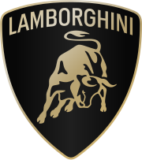
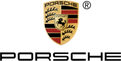
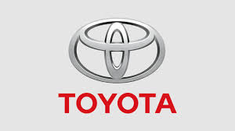

Lamborghiniis an Italian manufacturer of luxury sports cars and SUVs based in Sant'Agata Bolognese. The company is owned by the Volkswagen Group through its subsidiary Audi. Ferruccio Lamborghini (1916-1993), an Italian manufacturing magnate, founded Automobili Ferruccio Lamborghini in 1963 to compete with Ferrari.
Ferrari is an Italian luxury sports car manufacturer based in Maranello. Founded in 1939 by Enzo Ferrari (1898-1988), the company built its first car in 1940, adopted its current name in 1945, and began to produce its current line of road cars in 1947.
Porsche, is a German automobile manufacturer specializing in luxury, high-performance sports cars, SUVs and sedans, headquartered in Stuttgart, Baden-Württemberg, Germany. The company is owned by Volkswagen AG, a controlling stake of which is owned by Porsche Automobil Holding SE. Porsche's current lineup includes the 718, 911, Panamera, Macan, Cayenne and Taycan.
The BMW is a German multinational manufacturer of luxury vehicles and motorcycles headquartered in Munich, Bavaria, Germany. The company was founded in 1916 as a manufacturer of aircraft engines, which it produced from 1917 to 1918 and again from 1933 to 1945 creating engines for aircraft that were used in the Second World War.
Toyota Motor Corporation is a Japanese multinational automotive manufacturer headquartered in Toyota City, Aichi, Japan. It was founded by Kiichiro Toyoda and incorporated on August 28, 1937. Toyota is the largest automobile manufacturer in the world, producing about 10 million vehicles per year.
